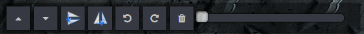

| Add items to your signature by clicking on the thumbnails on the bottom of the page. |
| You can customize the images using the resize/rotate handles on the images. |
| The toolbar provides useful features such as undo/redo and ordering manipulation.  |
|
You can add stat placeholders from the Stats tab. These values are live updated as you play! |
|
When you're happy with your signature visit the Share tab and hit 'Save'.
Then use the links to show off your new signature! |